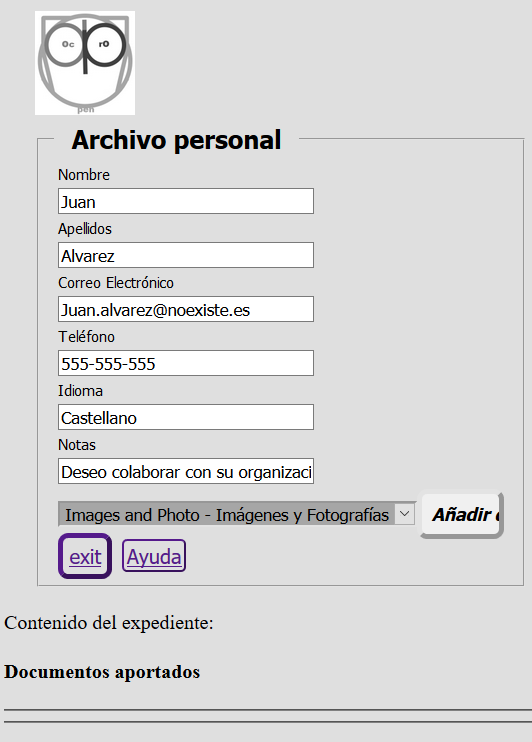
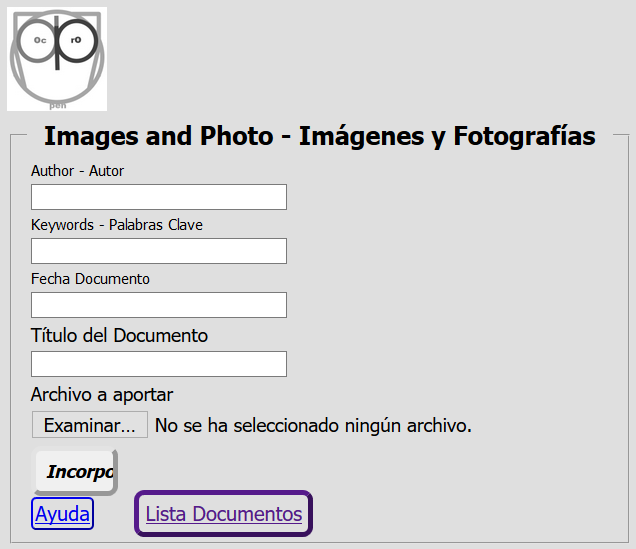

Contributions Module
Introduction
The OpenProdoc Contribution module allows to insert documentation to users not registered in OpenProdoc by means of totally configurable forms, similar to the OPAC search module that allows to search documents and folders to external users.
This can facilitate users external to the entity, or internal but not registered and who will access punctually, being able to provide documentation without the need for training or knowledge of OpenProdoc,
and avoids the management of users when it is necessary to deal with a large number of very specific collaborators, such as collaborators, partners or clients of an institution.
As in the case of the OPAC, security is critical, since confidential information could be accessed, documents can be manipulated or files that are harmful or too large can be iploaded.
To minimize risks, the contribution module has several forms of security and control that are detailed later.
With the function "Contribution Module" you can create forms like these:



How it works
The operation of the "Contribution Module", which only requires parameterization, is as follows:
- A folder should be chosen or created within OpenProdoc where the contributions of documents will be received and a type of folder should be created (chosen) to group those documents into "cases" with the sense that they want to give (donor, source, fund , ... ), with all the metadata that is considered necessary to define the "case".
- Within the total set of metadata, you can choose a subset of them that the external user can see, and enter if the system is defined as "open" (see the Security and Control section below), and some metadata that will be used to verify the identity of the external user if it is connected more than once or if the system is "closed".
- In addition, the document types to be accepted, the metadata to be entered for each type of document and the file formats must be chosen.
- When an external user connects, if the system is "open" it will present all metadata defined as "public" for the type of folder in the configuration.
The user will fill in all the mandatory metadata (among which will be the "verification" metadata) and when accepting a folder will be created (contained in the main folder of contributions), within which all the documents that will be uploaded will be stored. Authorized users within OpenProdoc can modify the metadata entered or modify metadata of the "internal" use folder, adding, in example, notes.
- Once the personal folder is accessed, the documents introduced up to that moment will be displayed and a new documentary type to be added can be chosen. The contribution module will present an input form with the metadata of the chosen documentary type, as well as a control to choose the document itself.
When accepting, the document will be incorporated into the folder, unless any restriction is breached, either by metadata (as mandatory, uniqueness, etc.) or by the document itself (extension not allowed, excessive size, ... ) in which case error information will be presented.
In another case, a confirmation screen will be presented and the content of the personal file will be presented again, with the documentation provided so far.
- When the user wants to end the session, they can leave the system and return to the login screen.
- If you want to provide documents in successive sessions you must enter the verification metadata so that the system can verify your identity and prevent a user from seeing the contents of a "case" that is not theirs.
This metadata fulfills the authentication function that is usually fulfilled by the combination of username and password, so that no other external user can enter the personal folder (authorized internal users through ACL) can always enter and perform the operations that the ACL allows them).
- If a system is closed, the difference is that only the verification metadata will be presented and that the folder must already be created. In other words, the staff responsible for OpenProdoc will have created the appropriate folders previously and sent the access / verification information to the users who will be connected.
- The "open" model can be applicable to a scenario in which a large number of unknown users will provide documentation, while the closed model would be applicable to a scenario where an institution works with a small number of collaborators or external partners, with which wants to share information but without creating internal users of OpenProdoc.
We must highlight the term "share", because in addition to uploading, all documents that are deposited in the folder case will be visible by the connected user. In other words, the institution can store documents that want the external user to see.
- In addition we must bear in mind that in that folder documents could be inserted with another ACL, so that they can not be seen by the external user but can be seen by internal staff.
- Once the information has been entered, an internal user with permissions on the folder can review the documentation provided, modifying metadata if necessary (for which another version should be created) or reclassifying the documents (exporting and importing again) if the classification was wrong.
Additionally, once the documentation is reviewed, it could be moved to another "public" folder from where it can be consulted through the OPAC or included in the corresponding document process.
Pages:
The contribution module manages 4 pages to perform its functions.
These pages, with a default structure already included in OpenProdoc, can be replaced by other pages (or even fragments of page or iframes if it is structured appropriately) indicating it in the parameters NumHtmlCont * and the rest of the related parameters.
The pages / steps that make up the contribution module are:
- Login: Entry form to request authentication data and file creation data if the system is open.
- List: Page that shows the data of the file and all the documents contained in it, and that allows to start the contribution of new documents.
- Upload of documents: Page that allows you to incorporate documents and fill in the metadata for the type of document chosen.
- Confirmation: Page showing the result (success or error) of the operation incorporating a document.
Parameterization:
You can create as many contribution files as you want. Each one will represent a "contribution area" with different characteristics and interface.
Although in principle they will be separated, CSS, internal user access and even the container folder could be shared.
As in the case of the OPAC, it will be invoked by means of a call, including as a parameter the identifier of the contribution file.
The file follows the usual standard of property files (tag + "=" + Value), admitting comments (lines that begin with the character '#').
The meaning of each label (which can not be repeated) is as follows:
- LoginFolderType: Type of folder that will be used to store and contain documents contributed by external users. A folder of this type will be created for each user.
It can contain the number and type of metadata considered necessary, including access metadata, information provided by the external user and "internal" metadata not visible to external users.
To avoid duplication, the type could include metadata with unique values. You could also define tasks associated with events to assign or change metadata values if desired. Ex LoginFolderType=Donation
- LoginFields: This entry contains the metadata of the type of folder that will be used to verify the identity of the user. If the system is closed, only those metadata will be presented and they will always be requested.
If it is open all those included in FieldsToInclude will be presented and after the first time (in which the folder is created) the following times will only be required. The number of verification metadata can be variable.
The minimum is one, but two, three, etc. can be included. according to the security and confidentiality of the system it requires it.
Keep in mind that these metadata, from the point of view of OpenProdoc are "normal" metadata and therefore are not ENCRYPTED, so it is not advisable to collect confidential information in them, as OpenProdoc users with access to these folders could see them. Ex: LoginFields=Mail|Phone
- FieldsToInclude: This entry contains all the metadata of the type of folder that will be allowed to view (always) or edit (if open) the user.
The login metadata should be included in the list. Additional metadata can be defined for internal use by OpenProdoc users (Notes, codes, dates, etc.). Example: FieldsToInclude=FirstName|LastName|Mail|Phone|Language
- DocTipesList: This parameter contains the list of document types that the user can provide.
Keep in mind that it only limits the types of documents to be contributed, but that in the case folder there may be other documents (introduced by an OpenProdoc internal user, for example, as an aid or to exchange documentation.) DocTipesList=PD_DOCS|Manual|Picture|Recordings
- Metadata list: For each document type included in DocTipesList an entry with the name: Fields_NameType can be specified, including a list of the metadata of that document type that the user will be requested.
Any metadata not included in the list will not be requested (although it may be presented if the Report used to show results contains it).
If an entry is not included for any of the types included in DocTipesList, ALL metadata of that type will be presented. The internal metadata is always excluded from the list: ACL, Doctype, LockedBy, MimeType, Name, ParentId, PDAuthor, PDDate, PDId, Purgedate, Reposit, Status, Version .ExFields_Picture=Title|Author|Keywords|DocDate
- OpenContrib: Indicates if the system is "open", that is, anyone can create folders or if it is closed and therefore the folders are already created and the external user that connects must know ALL the verification metadata to access the corresponding folder. Example: OpenContrib =1
- BaseFolder: Indicates the folder within which all folders of the type indicated in LoginFolderType will be created.
It must be a folder where the user used for the contribution has at least write and update permissions. Ex: BaseFolder=/Archive/UserDonations
- User: OpenProdoc user used internally to connect and create folders and documents.
It must be a user with limited permissions on folders (ideally only on BaseFolder) and role (only inserting folders and documents) as much as possible to minimize security risks. Ex User=guest1
- Pass: Password in "clear" of the selected user. Example: Pass=PassGuest1
- AllowedExt: List of allowed extensions to upload. Any other extension will be rejected, avoiding the upload of dangerous files. Ex.: AllowedExt=:doc|docx|xls|xlsx|ppt|pptx|txt|pdf|jpg|jpeg|tiff|tif|png|gif|odt
- MaxSize: Tamaño máximo en bytes de cada archivo subido, para evitar que se llene el sistema de archivos. Ej.: MaxSize=20000000
- ContribCSS: Identificador de la hoja de estilo css a utilizar. Puede ser un identificador de un archivo alojado en OpenProdoc o bien una url externa.
Los estilos predefinidos en la página se detallan en Estilos CSS Contribución. Ej.: ContribCSS=16697ec3694-3fe7288b86493159 o ContribCSS=http://www.portalCorporativo.com/css/estándar.css
- ContribLogo: Url del logo de las pantallas de contribución. Puede ser una url absoluta o bien una referencia a una imagen albergada en OpenProdoc. Ej.: ContribLogo=http://www.portalCorporativo.com/imgs/Logo.jpeg o ContribLogo=SendDoc?Id=43436565-aefe43434
- Title: Título a presentar en la pantalla de aportaciones. Ej.: Title=Entrada Donaciones Documentación
- TitleList: Título a presentar sobre la lista de documentos contenidos en la carpeta. Ej.: TitleList=Documentos aportados hasta el momento
- DocsReportId: Identificador del informe (Report) a utilizar para presentar documentos contenidos en la carpeta. Deberá ser un informe con un fragmento de página html que pueda “embeberse”. Ej.: DocsReportId=16654ff6af1-3f9b78099c0147a0
- UrlHelp: Página de ayuda que explique el proceso de forma general y completa. Ej. : UrlHelp= http://www.portalCorporativo.com/aportaciones/ayuda.html
- OKMsg: Texto a presentar cuando el documento se ha incorporado adecuadamente. Ej.: OKMsg=Documento Cargado Correctamente
- NumHtmlContLog: Número de páginas html de login alternativas. Para cada uno de los grupos de agentes que se enumeran deberá definirse una identificador de un documento OpenProdoc conteniendo una página html. Deberá crearse tantas parejas ListAgentLog[i], HtmlAgentLog[i] como indique esta entrada, empezando en cero. Ej.: NumHtmlContLog=2
- ListAgentLog[i]: Lista de agentes web para los que debe devolverse el html correspondiente de igual “subindice”. No es necesario incluir el nombre completo del agente, basta un fragmento del mismo, que puede incluir nombre, versión, etc. Ej.: ListAgentLog0=Firefox
- HtmlAgentLog[i]: Identificador del documento OpenProdoc con el html de login que debe devolverse para todos los agentes de igual subíndice. Ej.: HtmlAgentLog0=57576abf4-6565dde4
- NumHtmlContList: Número de páginas html alternativas de presentación del listado de documentos. Para cada uno de los grupos de agentes que se enumeran deberá definirse una identificador de un documento OpenProdoc conteniendo una página html. Deberá crearse tantas parejas ListAgentList[i], HtmlAgentList[i] como indique esta entrada, empezando en cero. Ej.: NumHtmlContList=1
- ListAgentList[i]: Lista de agentes web para los que debe devolverse el html correspondiente de igual “subindice”. No es necesario incluir el nombre completo del agente, basta un fragmento del mismo, que puede incluir nombre, versión, etc. Ej.: ListAgentList0=Firefox|Edge
- HtmlAgentList[i]: Identificador del documento OpenProdoc con el html de listado de documento que debe devolverse para todos los agentes de igual subíndice. Ej.: HtmlAgentList0=574343abf4-86976ddaa3
- NumHtmlContAdd: Número de páginas html alternativas de incorporación de documentos. Para cada uno de los grupos de agentes que se enumeran deberá definirse una identificador de un documento OpenProdoc conteniendo una página html. Deberá crearse tantas parejas ListAgentAdd[i], HtmlAgentAdd[i] como indique esta entrada, empezando en cero. Ej.: NumHtmlContAdd=3
- ListAgentAdd[i]: Lista de agentes web para los que debe devolverse el html correspondiente de igual “subindice”. No es necesario incluir el nombre completo del agente, basta un fragmento del mismo, que puede incluir nombre, versión, etc. Ej.: ListAgentAdd1=Edge|Firefox@Opera
- HtmlAgentAdd[i]: Identificador del documento OpenProdoc con el html de incorporación de documento que debe devolverse para todos los agentes de igual subíndice. Ej.: HtmlAgentAdd0=123456abf4-4477238dda3
- NumHtmlContRes: Número de páginas html alternativas de resultados de la incorporación de documentos. Para cada uno de los grupos de agentes que se enumeran deberá definirse una identificador de un documento OpenProdoc conteniendo una página html. Deberá crearse tantas parejas ListAgentRes[i], HtmlAgentRes[i] como indique esta entrada, empezando en cero. Ej.: NumHtmlContAdd=3
- ListAgentRes0: Lista de agentes web para los que debe devolverse el html correspondiente de igual “subindice”. No es necesario incluir el nombre completo del agente, basta un fragmento del mismo, que puede incluir nombre, versión, etc. Ej.: ListAgentRes0=Chrome|Opera
- HtmlAgentRes0: Identificador del documento OpenProdoc con el html de resultados incorporación de documento que debe devolverse para todos los agentes de igual subíndice. Ej.: HtmlAgentRes0=1885ffeebf4-4900462aaf3
Si el User-Agent del navegador no contiene ninguna de las entradas indicadas, entonces se utilizará las plantillas internas incluidas en OpenProdoc. Puede incluirse páginas alternativas solo para alguno de los elementos (login, listado, ..), no es necesario hacerlo para todos.
El proceso de parametrizar un punto de consulta consiste en crear un archivo de texto con el contenido citado (puede utilizarse como base el ejemplo incluido y modificarlo), introduciendo los valores adecuados a la instalación de OpenProdoc concreta.
Previamente debe modificarse el fichero de configuración de OpenProdoc (Prodoc.properties o el nombre utilizado) y añadirse 2 líneas:
User=Usuario1
Pass=ClaveUsuario1
Donde Usuario1 y ClaveUsuario1 serán datos de un usuario que tenga acceso a los distintos documentos que configuración (Contrib y Contrib_CS) que se describen a continuación.
Se recomienda que sea un usuario con un rol (perfil) limitado y con un mínimo de permisos, ya que solo debe poder acceder en modo lectura a los ficheros de configuración de la Contribución.
Como todo cambio en el fichero de configuración (Prodoc.properties), debe reiniciarse el servidor para que se lea de nuevo.
A continuación debe crearse (o modificarse el ejemplo incluido) el CSS para adaptarlo al estilo de la institución o empresa correspondiente.
Luego deberá añadirse el CSS al repositorio OpenProdoc y anotar el PdId generado.
Ese PdId es el que deberá referenciarse como parámetro ContribCSS: del fichero de configuración del módulo de contribución.
A continuacion se subirá ese fichero de configuración del módulo de contribución.
Con el Id generado deberá invocarse la url de OpenProdoc (Ej.: http://localhost:8080/ProdocWeb2/ContribLogin?Id= + el identificador del nuevo documento subido, por ejemplo http://localhost:8080/ProdocWeb2/ContribLogin?Id=566b6464a654-9696e68d686 ).
OpenProdoc presentará una página de acuerdo a los parámetros definidos en ese fichero, incluido hoja de estilo, literales, tipos documentales, etc.
Dado que toda la apariencia es parametrizable, incluidas tipologías documentales, metadatos, etc, y que está orientado a usuarios esporádicos, es razonable asumir que sea necesaria una ayuda personalizada.
Para eso se dispone de un botón que abrirá la página html cuya url se indique en la configuración. Podría ser una página externa o un documento html almacenado en OpenProdoc.
Hay que resaltar que el fichero de configuración, como cualquier documento de OpenProdoc puede ser editado y versionado, utilizándose siempre para componer el módulo de contribución la última versión publicada.
No obstante la actualización puede llevar cierto tiempo, ya que para mejorar el rendimiento la configuración no se actualiza inmediatamente, pues se utiliza una copia guardada en cache.
Dado que la parametrización se basa en un documento de OpenProdoc y el estilo en otro, es posible tener diversas parametrizaciones simultaneamente, que presenten diferentes conjuntos de documentos, distinto idioma del interfaz, distinto estilo o diferente usuario.
Suministrando a cada colectivo de usuarios la url adecuada (que solo se diferenciará en el Identificador de documento, puede ofrecerse simultaneamente muchos módulos de contribución distintos con muy poco esfuerzo.
Ejemplo de Archivo de configuración de módulo de contribución:
#======= Document configuration =============================================
# Fields used for "login"/verifiation of identity
LoginFields=Correo|Telef
# Fields of the Foolder type to ask to be filled
FieldsToInclude=Nombre|Apellidos|Correo|Telef|Idioma
# Path of folder where folders will be created
BaseFolder=/Donaciones
# Document types allowed to be uploded
DocTipesList=PD_DOCS|Manual|Picture|Grabaciones
# Non included doc types show ALL fields
#Fields_PD_DOCS=
Fields_Manual=Title|DocDate
Fields_Picture=Title|Author|Keywords|DocDate
#Fields_Grabaciones=
#======= Security ==========================================================
# Open (1) or closed (0)system. When closed, Folder MUST be created and login information transmited to external user.
OpenContrib=0
# Folder type to use
LoginFolderType=Donaciones
# UserName and Password of the user that will do the actual insert in openprodoc of Folders and docs.
# It is recmmended to be a user with a limiteed rol (only insert of folders and docs) and permissions only in the Contribution folder
User=guest1
Pass=passguest1
# Allowed extensions to upload
AllowedExt=doc|docx|xls|xlsx|ppt|pptx|txt|pdf|jpg|jpeg|tiff|tif|png|gif|odt
# MaxSize upload (bytes)
MaxSize=20000000
#======= Interface =========================================================
# Openprodoc identifier of CSS or http url of CSS
ContribCSS=16697ec3694-3fe7288b86493159
# url of logo. Can be a "local" url using the format /SendDoc?Id=Identifier of doc
ContribLogo=img/LogoProdoc.jpg
# Title to be show in login
Title=Aportaciones
# Title to be show in content of folder
TitleList=Archivo personal
# Id of Report used for showing docs infolder
DocsReportId=16654ff6af1-3f9b78099c0147a0
# Url of help
UrlHelp=
#======= Alternative htmls ==================================================
# Alternative htmls depending on agent
#---------------------------------------------
# Num alternatives for login
NumHtmlContLog=1
# Agents for login
ListAgentLog0=Edge|Firefox
# html for each agent of login
HtmlAgentLog0=166a24cd914-3fee91e7fa2c96cc
#---------------------------------------------
# Num alternatives for Lista of docs
NumHtmlContList=1
# Agents for List
ListAgentList0=Chrome
# html for each agent of List
HtmlAgentList0=166a24d2fa1-3fe05747921f306c
#---------------------------------------------
# Num alternatives for adding docs
NumHtmlContAdd=1
# Agents for adding docs
ListAgentAdd0=Opera|Chrome
# html for each agent of adding docs
HtmlAgentAdd0=166a24d90f9-3fc08534bf7753e0
#---------------------------------------------
# Num alternatives for Results adding docs
NumHtmlContRes=1
# Agents for Results adding docs
ListAgentRes0=*
# html for each agent of Results adding docs
HtmlAgentRes0=166a24de462-3fc29665f8ea9ffc
#====================================================
Automatización
Para facilitar el trabajo de los usuarios internos, es recomendable el definir tareas automáticas que notifiquen los cambios y que normalicen las entradas.
Por ejemplo, si la carpeta tiene unos metadatos Nombre, apellidos y DNI, puede ser recomendable la creación de una tarea asociada al evento “Inserción” de tipo “modificar metadatos”, que normalice el título de la carpeta con la “fórmula“ Titulo= DNI+”-“+Apellidos+”,”+Nombre (la sintaxis exacta no es esta, pero se utiliza por claridad). De esta forma se asegura que la nomenclatura es homogénea independientemente de quién introduzca los datos.
También podría crearse una tarea programada que todas las noches envíe un informe a determinado grupo con los datos de todas las carpetas creadas o actualizadas (es decir que tienen nuevos documentos) en el día, de forma que automáticamente se puede saber qué nueva documentación se ha recibido y expedientes hay que revisar sin necesidad de revisarlos uno a uno.
Seguridad y Control:
Dado que el acceso externo a un gestor documental por parte de usuarios externos sin autenticar puede implicar riesgos de diverso tipo, se ha introducido diversas medidas para minimizar el riesgo:
- La definición de un sistema como sistema cerrado permite que solo los usuarios que conozcan información de las carpetas/expedientes pueden entrar en el sistema. Aunque el sistema sea abierto, una vez creado el expediente, solo el usuario conoce los datos de acceso exigidos puede conectarse. A todos los efectos el comportamiento es similar a la creación de usuarios, que deben conocer usuario y password para entrar, exigiéndose en el caso del módulo de contribución, el conocimiento de 2 o más campos del expediente (ej NIF y teléfono, nombre y código de expediente,…).
- El usuario de aplicación de OpenProdoc que se utilice internamente para conectarse desde el módulo de contribución debería ser un usuario con los mínimos permisos. Básicamente tener un rol que solo permita crear documentos (y crear carpetas si el sistema es abierto, en otro caso no es necesario) y que solo tenga acceso a esa carpeta. Eso minimizará el riesgo si de alguna forma un usuario externo lograra acceder con ese usuario interno.
- Para evitar la introducción de archivos dañinos perjudiciales, puede parametrizarse la lista de extensiones permitidas. Si un documento que se intenta subir no tiene alguna de las extensiones incluidas en la lista, se rechazará. Eso evitará que pueda incorporarse programas ejecutables (exe, com, dll, ...) o script (bat, sh, vbs,..) que pueden contener virus o código perjudicial.
- Para evitar el desbordamiento del sistema, puede limitarse el tamaño máximo de cada archivo a subir, de forma que no pueda incorporarse archivos de varios Gigabytes que llenen el sistema de archivos y bloqueen el funcionamiento.
- La posibilidad de crear diversas configuraciones (ficheros de configuración) permite crear áreas separadas donde distintos tipos o grupos de usuarios puedan colaborar. Incluso aunque pudiera obtenerse datos de acceso a un área de contribución, no se dispondría de acceso a otro área.
Si la documentación que contiene el repositorio incluye documentación confidencial o especialmente delicada, para aumentar la seguridad la recomendación sería disponer de DOS instalaciones, una dedicada únicamente a recoger la documentación desplegada en la DMZ o nube o un área visible desde Internet y otra desplegada en un ámbito interno donde esta resida finalmente. La comunicación entre ambas puede automatizarse por medio de tareas automáticas en el repositorio de entrada que exporten la documentación (nada más introducirse o periódicamente) y otras tareas automáticas que la importen el repositorio destino.
Índice Ayuda OpenProdoc